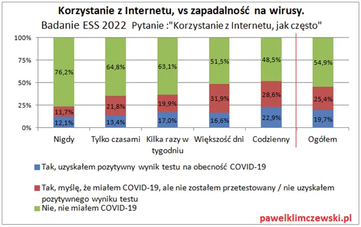
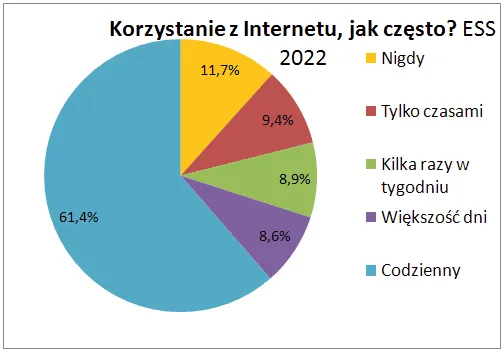

Uwaga! Nasz organizm atakują wirusy komputerowe.
Dotarłem do badania robionego przez doświadczonych akademików i jestem pod wrażeniem.
Badanie były robione na ponad 2000 osób. Jak widać po prawej w słupku "ogółem" aż 55% Polaków nie doświadczyła najmodniejszej choroby stulecia.

Nasza populacja dzieli się na różne grupy użytkowników mediów, wbrew pozorom ciągle ponad 10 % nie używa internetu i jak widać wychodzi im to na zdrowie. 76 % z nich przeszło zdrowo przez ostatnie kataklizmy. Tymczasem ci, którzy nagminnie siedzą w sieci nawet bez diagnozy wiedzą, że byli chorzy.

W takiej sytuacji trzeba powołać wspólną komisję epidemiologów i informatyków, aby zbadali czy nie zachodzi tu zjawisko krzyżowania się wirusów komputerowych z biologicznymi ;)
Omicron-Android, taka mogłaby być nazwa pierwszej mutacji, potem Omicron-OS, Omicron-Widnows, i najgroźniejszy Omicron-TVP, któremu już wystarczy sam światłowód bez internetu.
Paweł Klimczewski